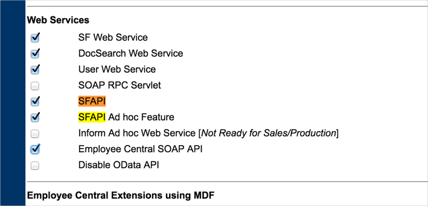
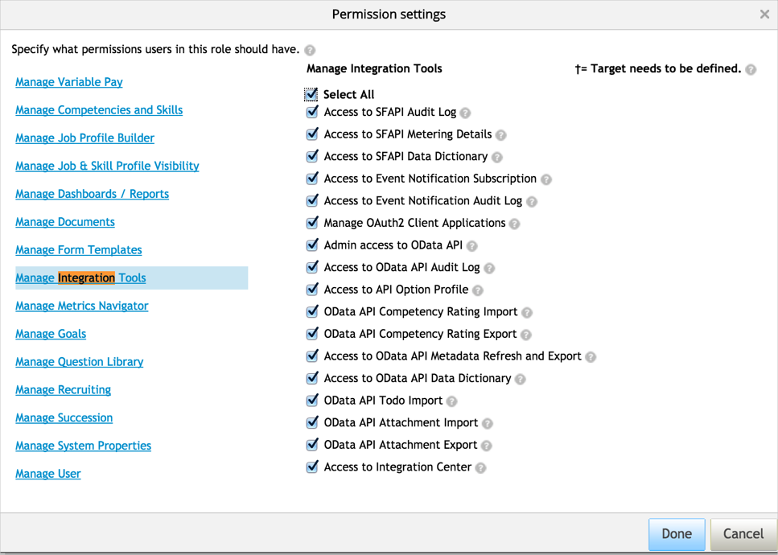
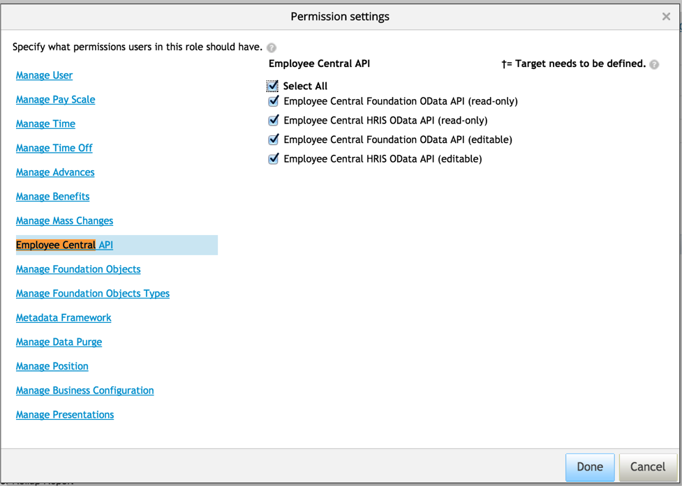
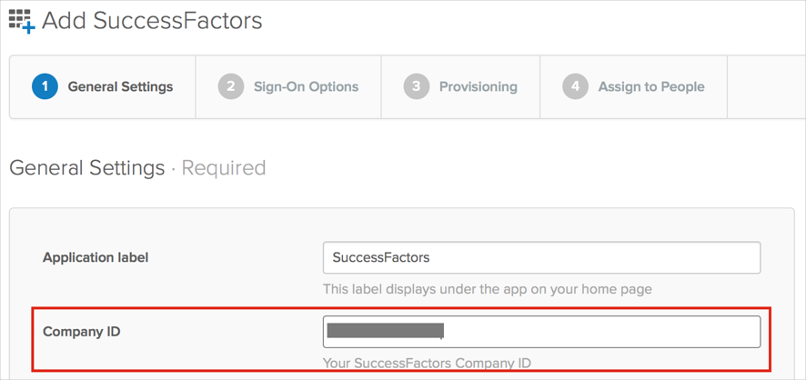
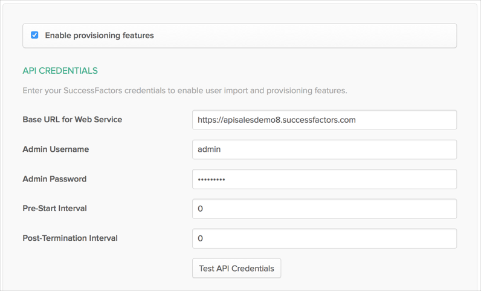
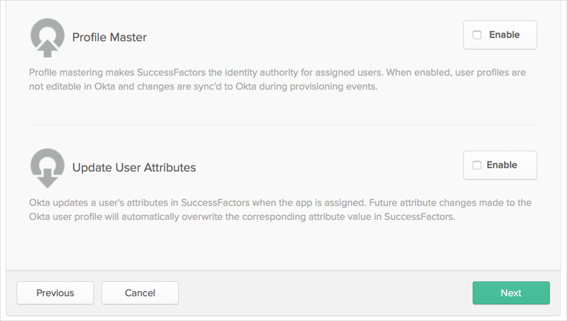

This guide provides the steps required to configure Provisioning for SuccessFactors Employee Central as a Master
Note:
This integration is not intended to provision users to SuccessFactors; roles and permissions cannot be set via Okta.
Okta integrates with SuccessFactors Employee Central, an integrated suite of human capital management web-based applications, to provide a comprehensive identity and access management solution. Okta automates provisioning in all leading cloud and web applications. With SuccessFactors-driven IT provisioning, Okta can drive the worker life cycle of new-hire, update, termination, and rehire to downstream applications from events that originate in SuccessFactors Employee Central.
Okta can import users from SuccessFactors Employee Central through its EC Compound Employee API. Okta supports two typical scenarios:
Import from SuccessFactors Employee Central.
SuccessFactors (EC)-driven IT Provisioning.
Both are described below:
In this scenario, Okta simply imports users and groups from SuccessFactors EC like any other application. Imported users are used to create Okta users. However, once the SuccessFactors EC users are imported into Okta, they are no longer managed by SuccessFactors EC. Any updates to the user made in SuccessFactors EC will not change the associated Okta user.
In this scenario, Okta integrates with SuccessFactors EC to drive IT provisioning. When the SuccessFactors EC user is imported into Okta, they continue to be managed by SuccessFactors EC. Updates and terminations made in SuccessFactors EC are reflected in Okta and downstream apps. This arrangement enables SuccessFactors EC to manage employee and contractor access to apps. SuccessFactors EC-driven IT provisioning is a superset of the functionality provided in Import from SuccessFactors EC, so the rest of this deployment guide focuses on configuring SuccessFactors EC-driven IT provisioning, but will be relevant to Import from SuccessFactors EC scenarios as well.
Note: SuccessFactors EC-Driven IT provisioning requires the Enterprise or Enterprise Plus versions of Okta to enable SuccessFactors EC as a Profile Master and for flexible attribute mappings.
With Successfactors EC-driven IT provisioning, Okta supports the following worker lifecycle events:
New hire
A new employee is hired in SuccessFactors EC
Okta imports the new employee and creates an Okta user profile
Okta creates accounts in downstream apps (AD included)
Updates
An employee’s attribute is changed in SuccessFactors EC
Okta imports the attribute change
Okta updates the attribute in downstream apps (AD included)
Termination
An employee is terminated in SuccessFactors EC
Okta imports the status change
Okta deactivates the Okta user and accounts in downstream apps (AD included)
Future Dated Hire
A new employee is added in SuccessFactors EC with a start date in future
If the start date falls in the pre-start interval set under the provisioning tab, the future dated hire is imported into Okta with an active status
Okta creates accounts in downstream apps (AD included)
Post Termination
An employee is terminated in SuccessFactors EC
The employee remains active in Okta for the number of days set in the post termination field under the provisioning tab
Okta deactivates the Okta user and accounts to downstream apps (AD included) once the post termination days have passed
The following provisioning features are supported:
Import New Users
Import Profile Updates
Import User Schema
Push Profile Updates/Write-back functionality
Please note that only primary email and primary phone can be updated
Profile Master
Pre-start Interval
This field permits early provisioning of SuccessFactors EC users. It allows on-boarding a user account into Okta before their official Worker/Employee Date (that is, the employee’s actual start date). The interval is the number of days (prior to a SuccessFactors EC user’s stated Worker/Employee Date) before Okta evaluates a SuccessFactors EC user for early import. If this feature is enabled, Okta evaluates the SuccessFactors EC Pre-Hire Date and, if it falls within the set interval, Okta imports the user with an active status in Okta.
Note: This is only used when Profile Mastering is enabled.
Post-Termination Interval
This field permits late deactivation of SuccessFactors EC users. It allows users to keep their Okta account active after their end/termination date in SuccessFactors EC. The interval is the number of days (after a SuccessFactors EC user's stated end date) after Okta evaluates a SuccessFactors EC user for deactivation. If this feature is enabled, Okta evaluates the SuccessFactors EC Post Terminiation date, and keeps the users active in Okta for the defined number days, after their termination/end date.
Contact SuccssFactors or the implementation partner to get the SuccessFactors SF API enabled for your tenant. They will need to log in to the Provisioning Access Console > Select your company > Company Settings > Under Web Services, and check the following fields:
SFAPI
Employee Central SOAP API
Other items are checked by default

Login to your Successfactors tenant as a System Administration, then navigate to Set User Permissions > Manage Permission Roles > System Admin, click the Permission..., button and enable the following:
Manage Integration tools > Select all, then Save.xxx should this be Done

Employee Central API > Select all, then save.xxx should this be Done

In Okta, add the SuccessFactors application, then select the General Settings tab, and be sure to set the Company ID parameter.
The value for this can be obtained from your login URL: https://acme.successfactors.com/login?company=ACME123456789.

Configure your Provisioning settings for SuccessFactors as follows:
Check the Enable provisioning features box.
Enter the following API CREDENTIALS:
Base URL for Web Service: This is your API base URL. Pay attention as it differs from your login URL. List of API URLs can be found here.
Admin Username: Enter a username for admin account.
Admin Password: Enter a password for the for admin username (above).
Pre-Start Interval: Enter the number of days before the start date an employee should be considered active.
Post-Termination Interval: Enter the number of days after user termination an employee should be considered active.

Scroll down and select the Provisioning Features you want to enable, then click Save.
Note: In order to turn on Update User Attributes feature along with Profile Mastering, for write-back functionality, contact Okta support to get the following Feature Flags enabled for your Okta org:
ALLOW_BOTH_PROFILE_MASTERING_AND_PUSH
ATTRIBUTE_LEVEL_MASTERING

Note that the default Okta username format is email-formatted, while SuccessFactors doesn't have any specific requirement for the username format. Therefore the default username mapping from SuccessFactors to Okta is the following:
appuser.person___logon_user_name + "@" + org.subdomain + ".com"
In case you have multiple job assignment in your SuccessFactors account (either with Global Assignment or with Concurrent Assignment), Okta treats them the following way:
Global Assignments will be prefixed with:
"person___employment_information_GA1___"
For example: "person___employment_information_GA1___job_information___job_title"
Standard Assignments will be prefixed with:
"person___employment_information_ST1___job_information"
For example: "person___employment_information_GA1___job_information___job_title"
Where ST1/ST2 order defined by employment_information.employment_id value
For example: "employment_information.employment_id=123" treats as "ST1" and "employment_information.employment_id=456" treats as ST2)
In case any of user's job_information.emplStatus == "A" user treated as active in Okta.
In case no job_information.emplStatus equals to "A", user will be treated as pre-hired (active) based on job_information.start_date: Okta selects the most early value among all job_informations and compare it like "now > startDate > now + preHireInterval". Once condition is true - user treated as active.
If user isn't active and didn't pass pre-hire verification he/she will be tested against post-termination verification. Okta select the most latest job_information.end_date and verifies "now - postTerminationInterval > endDate > now".
If user didn't pass any of verifications above he/she treated as inactive and won't be imported into Okta.
Okta selects only ones which are marked as "isPrimary = true".
The following table contains a list of supported entities and attributes within those entities.
Note:Attributes marked RED are blacklisted. Okta does not query or save any information related to these attributes.
| Person | Personal Information | Address Information | Email Information | Employment Information | Phone Information | Job Information |
|---|---|---|---|---|---|---|
| birth_name country_of_birth date_of_birth date_of_death logon_user_id logon_user_is_active logon_user_name person_id person_id_external place_of_birth region_of_birth Custom_string1 - 20 Custom_date1 - 10 Custom_long1 - 20 Custom_double1 - 20 | birth_name display_name display_name_alt1 display_name_alt2 end_date first_name first_name_alt1 formal_name formal_name_alt1 formal_name_alt2 gender initials last_name last_name_alt1 marital_status middle_name name_format name_prefix nationality native_preferred_lang salutation second_title start_date suffix title workflow_request_id Custom_string1 - 20 Custom_date1 - 10 Custom_long1 - 20 | address_type address1 – 10 address1_alt1 address1_alt2 address2_alt1 address2_alt2 address3_alt1 address3_alt2 city country county end_date province start_date state zip_code Custom_string1 - 20 Custom_date1 - 10 Custom_long1 - 20 Custom_double1 - 20 | email_address Custom_string1 - 20 Custom_date1 - 10 Custom_long1 - 20 Custom_double1 - 20 | assignment_class assignment_type benefits_eligibility_start_date benefitsEndDate bonusPayExpirationDate direct_reports employment_id end_date firstDateWorked globalAssignmentPlannedEndDate is_host_assignment isPrimary jobNumber last_modified_by last_modified_on lastDateWorked originalStartDate payrollEndDate professionalServiceDate salary_end_date seniorityDate serviceDate start_date StockEndDate user_id Custom_string1 - 100 Custom_date1 - 30 Custom_long1 - 20 Custom_double1 - 20 | area_code country_code extension phone_number phone_type Custom_string1 - 20 Custom_date1 - 10 Custom_long1 - 20 Custom_double1 - 20 | acquired_from_ company business_unit company company_territory_code cost_center created_by created_on_timestamp department division eeo_class eeo_job_group eeo1_job_category eeo4_job_category eeo5_job_category eeo6_job_category employee_class employee_type employment_type emplStatus end_date event event_reason flsa_status fte holiday_calendar_code is_cross_border_worker is_eligible_for_benefit is_eligible_for_car is_fulltime_employee is_home_worker is_primary is_shift_employee job_code job_title local_job_title location manager_category manager_employment_id manager_id manager_person_id notes pay_grade pay_group payroll_event payScaleArea payScaleType position regular_temp seq_number shift_code shift_factor shift_rate standard_hours start_date supervisor_level time_type_profile_code timezone work_period workflow_request_id workingDaysPerWeek workschedule_code Custom_string1 - 100 Custom_date1 - 30 Custom_long1 - 20 Custom_double1 - 20 |